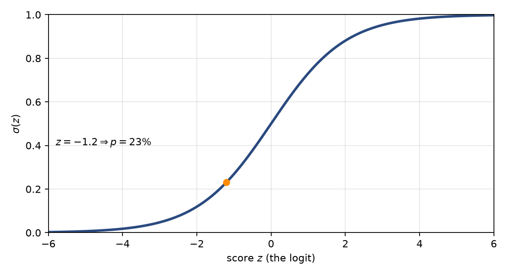
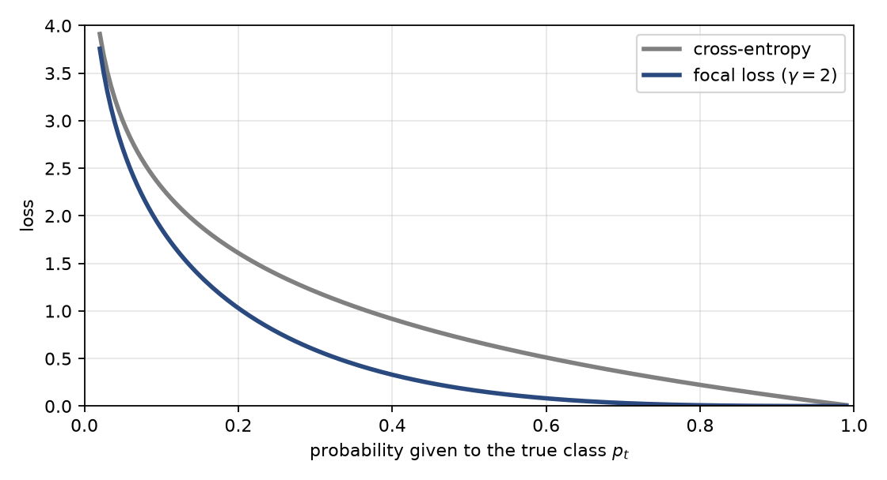
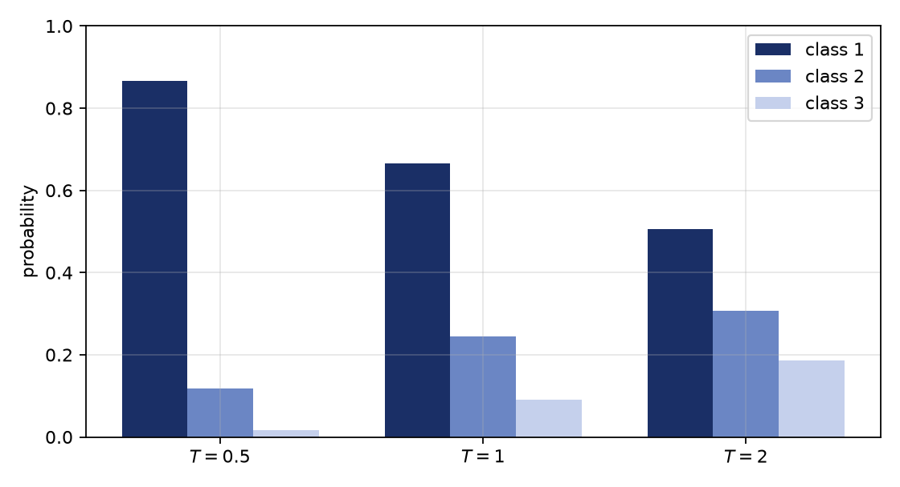

Binary classification¶
A binary classifier receives features \(x\) and predicts a label \(y\in\{0,1\}\). In fraud detection \(y=1\) means fraud and \(y=0\) means legitimate. The useful output is not a hard label but a probability
because decisions (block, review, allow) depend on a threshold that reflects the cost of each kind of error.
Example 1: Running example
A payment network processes \(1{,}000{,}000\) transactions, of which \(5{,}000\) are fraud. The base rate (prior) is \(\pi=\mathbb{P}(Y=1)=0.5\%\). A transaction with the pattern 3 a.m., large amount, new device occurs in \(3{,}000\) of the \(5{,}000\) frauds and in about \(10{,}000\) of the \(995{,}000\) legitimate cases.
Two ways of conditioning give very different answers:
The first describes how fraudsters behave; the second says how trustworthy an alert is. The gap between them is caused by the rarity of fraud, and odds are the cleanest way to see this.
Odds¶
Definition: odds
For an event with probability \(p\), the odds are
Odds restate a probability as “for versus against”. If \(3\) of every \(13\) alerts are fraud, then \(p=3/13\approx 23\%\) and the odds are \(3:10=0.30\).
| \(p\) | odds \(p/(1-p)\) | In words |
|---|---|---|
| 0.5% | 0.00503 | about 1 fraud per 199 legitimate |
| 10% | 0.111 | 1 per 9 |
| 23% | 0.30 | 3 per 10 |
| 50% | 1 | even odds |
| 90% | 9 | 9 per 1 |
- Probability versus odds. For small \(p\) they are almost equal; they separate as \(p\) grows.
Why odds?¶
-
Odds range over \([0,\infty)\) rather than \([0,1]\), which is one step closer to what a linear function can produce.
-
Evidence multiplies odds. Bayes’ rule in odds form is
The marginal $\mathbb{P}(x)$ appears in both posteriors and cancels.
Example 2
In Example 1 the prior odds are \(5000:995000\approx 0.005\) and the likelihood ratio is \(0.60/0.01=60\). Posterior odds \(=0.005\times 60=0.30\), i.e. \(3000:10000\), a \(23\%\) fraud probability. The pattern is \(60\) times more common among fraud, yet only \(23\%\) of cases showing it are fraud, because the prior odds are about \(1:199\).
The logit (log-odds)¶
Definition: logit
Odds are never negative, but a linear score \(w^\top x+b\) can be any real number. The logarithm removes the last restriction: odds \(<1\) give a negative logit, odds \(=1\) give \(0\), odds \(>1\) give a positive logit, and \(0,\infty\) map to \(\mp\infty\). The logarithm also turns the product in Bayes’ rule into a sum:
Each piece of evidence adds a number to a running score, which is exactly how a linear model works.
| \(p\) | odds | \(\mathop{\mathrm{logit}}(p)\) |
|---|---|---|
| 1% | 0.0101 | \(-4.595\) |
| 10% | 0.111 | \(-2.197\) |
| 50% | 1 | \(0\) |
| 90% | 9 | \(+2.197\) |
| 99% | 99 | \(+4.595\) |
- The logit is antisymmetric: \(\mathop{\mathrm{logit}}(1-p)=-\mathop{\mathrm{logit}}(p)\).
Example 3
The prior logit is \(\ln(1/199)=-5.29\). The pattern adds \(\ln 60=+4.09\), giving \(-1.20\): odds \(0.30\), probability \(23\%\). The score rose by \(4.09\) but stays negative because the prior was so low.
The sigmoid¶
Definition: sigmoid
Derivation.¶
Solve \(z=\ln\frac{p}{1-p}\) for \(p\):
Properties.¶
\(\sigma(z)\in(0,1)\); \(\sigma(0)=\tfrac12\); \(\sigma(-z)=1-\sigma(z)\); \(\sigma'(z)=\sigma(z)(1-\sigma(z))\), with maximum slope \(0.25\) at \(z=0\); every \(+1\) on the score multiplies the odds by \(e\).

Key idea
Logit and sigmoid are the same relationship seen from two sides. A classifier works in score space, where addition and linear models are natural, and reports in probability space, where decisions and costs live.
Logistic regression¶
Model
Logistic regression assumes the log-odds are linear in the features:
Reading the weights.¶
Increasing \(x_j\) by one unit raises the score by \(w_j\) and multiplies the odds by \(e^{w_j}\) (the odds ratio). For \(w_j=0.7\), \(e^{0.7}=2.014\): the odds double. The bias \(b\) is the logit at \(x=0\) and carries the base rate.
Why is the assumption reasonable?¶
If features within each class are Gaussian with different means and a shared covariance \(\Sigma\), then the quadratic terms cancel and
which is linear in \(x\); adding the prior logit changes only the bias. The assumption concerns the log-odds, not the data being Gaussian.
Geometry.¶
The boundary at threshold \(0.5\) is the hyperplane \(w^\top x+b=0\). A different threshold \(t\) shifts it parallel to itself to \(w^\top x+b=\mathop{\mathrm{logit}}(t)\).
Binary cross-entropy¶
For label \(y\in\{0,1\}\) and \(p=\sigma(z)\), the model gives \(\mathbb{P}(y\mid x)=p^{y}(1-p)^{1-y}\). For independent examples, the negative log-likelihood is
A confident wrong prediction is expensive: \(p=0.01\) on a fraud case costs \(-\ln 0.01=4.6\).
Gradient
Using \(\sigma'=\sigma(1-\sigma)\),
Consequences:
-
No vanishing gradient. At \(p=0.01,\,y=1\) the cross-entropy gradient is \(-0.99\), whereas squared error gives about \(-0.0098\).
-
Balance at the base rate. If the model outputs \(p=\pi=0.5\%\) for everyone, gradients on the \(5{,}000\) positives sum to \(-4{,}975\) and on the \(995{,}000\) negatives to \(+4{,}975\). They cancel, so the loss is minimised when predicted probability equals empirical frequency, which is why log loss yields calibrated probabilities.
The loss is convex in \((w,b)\).
Focal loss.¶
Focal loss multiplies each term by \((1-p_t)^{\gamma}\), with \(p_t\) the probability given to the true class. For \(\gamma=2\) and \(p_t=0.9\) cross-entropy is \(0.1054\) and focal loss \(0.00105\); at \(p_t=0.5\) they are \(0.693\) and \(0.173\). Easy examples are suppressed, at the cost of calibration.

From two classes to \(K\): odds against a reference class¶
With \(K\) classes there is no single “other” class, so choose a reference (say class \(K\)) and compare every class with it:
Setting \(z_K=0\), the odds of class \(k\) against the reference are \(e^{z_k}\), and normalisation gives
This is multinomial logistic regression, with \(K-1\) weight vectors. The case \(K=2\) is ordinary logistic regression.
Example 4
Classes: legitimate (reference), card-not-present fraud, account takeover, with \(z_{\text{cnp}}=1\), \(z_{\text{ato}}=0\). Then \(\mathbb{P}(\text{legit})=1/(1+e+1)=0.212\), \(\mathbb{P}(\text{cnp})=0.576\), \(\mathbb{P}(\text{ato})=0.212\).
Choosing another reference changes the individual weights but not the probabilities: only score differences matter. This leads to the symmetric form.
Softmax¶
Definition: softmax
Dividing numerator and denominator by \(e^{z_K}\) recovers the reference-class form. For \(K=2\), \(\mathop{\mathrm{softmax}}(z)_1=\sigma(z_1-z_2)\): the sigmoid is a two-class softmax.
Properties.¶
Outputs are positive and sum to \(1\); adding a constant to all scores changes nothing (subtract \(\max_k z_k\) in code to avoid overflow); the log-odds between any two classes is \(z_i-z_j\).
Temperature.¶
Replace \(z\) by \(z/T\). For scores \((2,1,0)\):
| \(T\) | class 1 | class 2 | class 3 |
|---|---|---|---|
| 0.5 | 0.8668 | 0.1173 | 0.0159 |
| 1 | 0.6652 | 0.2447 | 0.0900 |
| 2 | 0.5065 | 0.3072 | 0.1863 |
- As \(T\to0\) the output becomes one-hot; as \(T\to\infty\) it becomes uniform.

Multi-class versus multi-label.¶
Softmax assumes exactly one correct class. If several labels can hold at once, use an independent sigmoid per label.
Categorical cross-entropy¶
With a one-hot label (\(1\) at the true class \(c\)) and softmax probabilities \(p\),
Binary cross-entropy is the case \(K=2\). The gradient with respect to the logits is again prediction minus truth:
and sums to zero across classes, consistent with shift invariance.
Example 5
Scores \((2,1,0)\) give \(p=(0.6652,0.2447,0.0900)\). If the true class is \(2\): \(\mathcal L=-\ln0.2447=1.408\), gradient \((0.6652,-0.7553,0.0900)\). If it is class \(1\): \(\mathcal L=-\ln0.6652=0.408\).
Squared error again suffers vanishing gradients for confident wrong predictions and is not the maximum-likelihood objective. In practice, frameworks fuse softmax and cross-entropy on raw logits (log-sum-exp trick) for stability.
Worked examples¶
Example 6: Prior shift
A model trained when fraud was \(0.5\%\) is deployed at \(0.25\%\), assuming only the prior changed:
Odds are multiplied by \(0.4987\). A score of \(23\%\) (odds \(0.30\)) becomes odds \(0.150\), i.e. \(13\%\). This is a bias shift, so ROC-AUC and PR-AUC are unchanged while precision at a fixed threshold changes. The same correction maps probabilities from a resampled training set back to the real base rate.
Example 7: Odds ratio
A weight of \(0.7\) on “new device” gives odds ratio \(e^{0.7}=2.014\). From baseline odds \(0.00503\) (0.5%) the new-device odds are \(0.01013\), about \(1.0\%\). Doubling odds roughly doubles a small probability, but from \(50\%\) it only reaches \(67\%\).
Example 8: Probabilities versus decisions
With \(p=(0.665,0.245,0.090)\) for (legitimate, CNP, ATO) the arg-max is legitimate, yet the fraud mass is \(33.5\%\). If account takeover is far costlier than a false alert, decide by expected cost, not arg-max.
Cheat sheet and interview one-liners¶
| Concept | Formula | Meaning |
|---|---|---|
| Odds | \(p/(1-p)\) | for versus against, \([0,\infty)\) |
| Logit | \(\ln\frac{p}{1-p}\) | log-odds, whole real line |
| Sigmoid | \(1/(1+e^{-z})\) | score \(\to\) probability |
| Logistic regression | \(\sigma(w^\top x+b)\) | log-odds linear in \(x\) |
| Odds ratio | \(e^{w_j}\) | odds multiplier per unit |
| BCE | \(-[y\ln p+(1-y)\ln(1-p)]\) | negative log-likelihood |
| Gradient | \(p-y\) | prediction minus truth |
| Softmax | \(e^{z_k}/\sum_j e^{z_j}\) | \(K\)-class sigmoid |
| Categorical CE | \(-\ln p_c\) | NLL of the true class |
| Prior shift | \(z+\mathop{\mathrm{logit}}\pi_{\text{new}}-\mathop{\mathrm{logit}}\pi_{\text{old}}\) | bias adjustment |
-
What is the logit? The log of the odds; it maps \((0,1)\) onto the real line so a linear model can predict it.
-
What does logistic regression assume? That log-odds are linear in the features, not that the data are Gaussian.
-
Why cross-entropy, not MSE? It is the maximum-likelihood loss, convex here, and its gradient \(p-y\) does not vanish when the sigmoid saturates.
-
How do you read a coefficient? \(e^{w}\) is the odds multiplier per unit, others fixed.
-
Sigmoid versus softmax? Sigmoid is softmax with two classes applied to the score difference.
-
Why is precision low for a rare class? Posterior odds \(=\) prior odds \(\times\) likelihood ratio; prior odds \(1:199\) shrink even a likelihood ratio of \(60\) to a \(23\%\) probability.
-
What changes under prior shift? The bias, by \(\mathop{\mathrm{logit}}\pi_{\text{new}}-\mathop{\mathrm{logit}}\pi_{\text{old}}\); ranking is unchanged, thresholds must be re-set.
-
Why can focal loss hurt calibration? It down-weights confident examples, so the minimiser is no longer the true probability; recalibrate (Platt or isotonic) before using scores as probabilities.